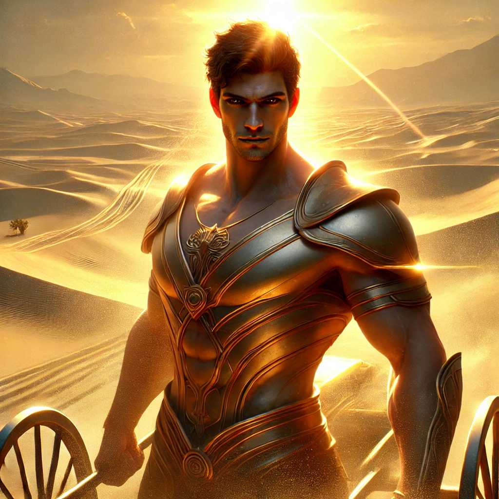
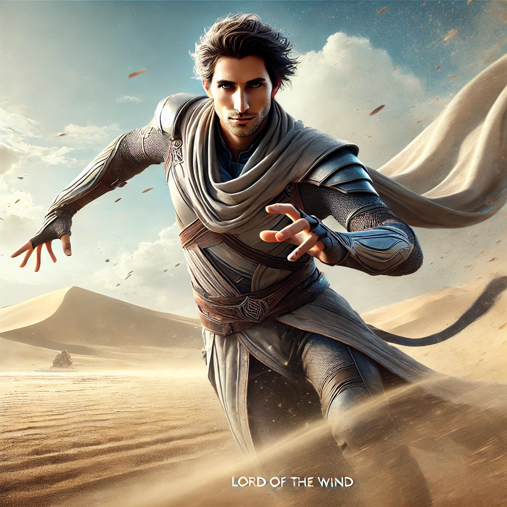
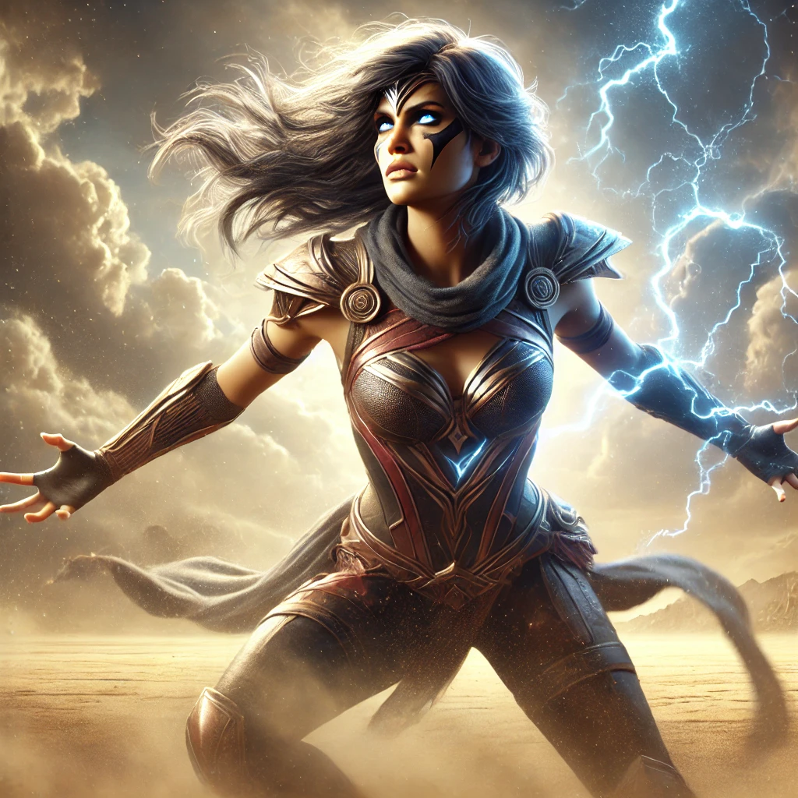
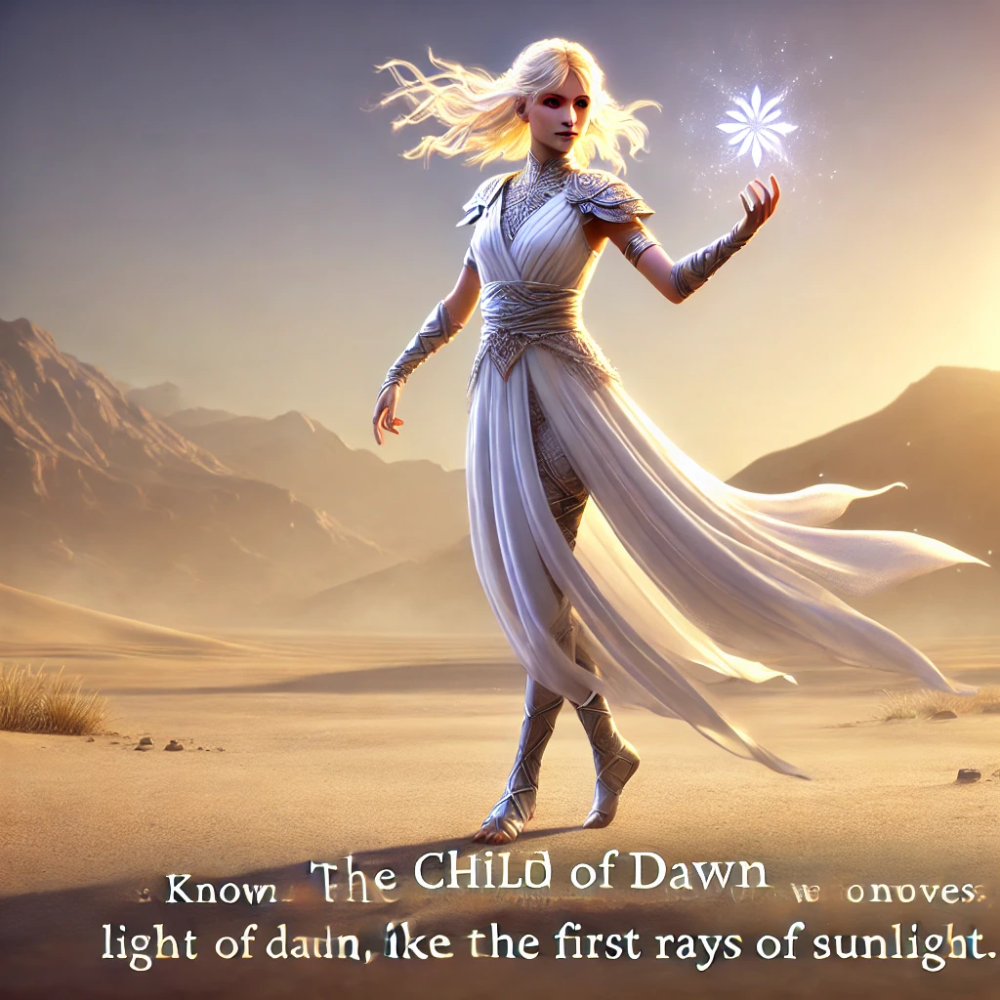
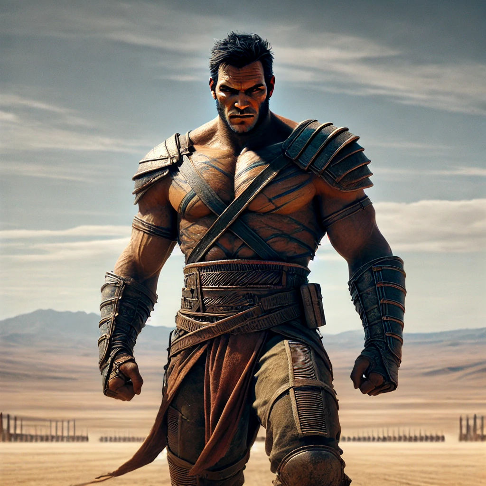

Aureon
Az aranyszívű

Calypho
A szél ura

Zarek
Az árnyék harcosa

Thyra
A vihar gyermeke

Lykara
A hajnal gyermeke

Mordekai
A sivatag sziklája
Egy trófea, melyért csak a legbátrabbak és legerősebbek küzdhetnek!
A győztes dicsőségét örök időkig megőrzi az aréna, és neve a homokba vésődik a sivatag fuvallatában. Babérkoszorú, tisztelet és a trófea vár azokra, akik minden erejüket latba vetik. Csak az igazán elszántak méltóak erre a díjra, akik képesek a legnehezebb próbákon át kitartani
Az aranyszívű
A szél ura
Az árnyék harcosa
A vihar gyermeke
A hajnal gyermeke
A sivatag sziklája
Vajon benned megvan az a bátorság, ami a legjobbak kiváltsága? Csatlakozz azokhoz, akik nem félnek szembenézni a sivatag kihívásaival! Jelentkezz most, és lépj be a legendák közé!